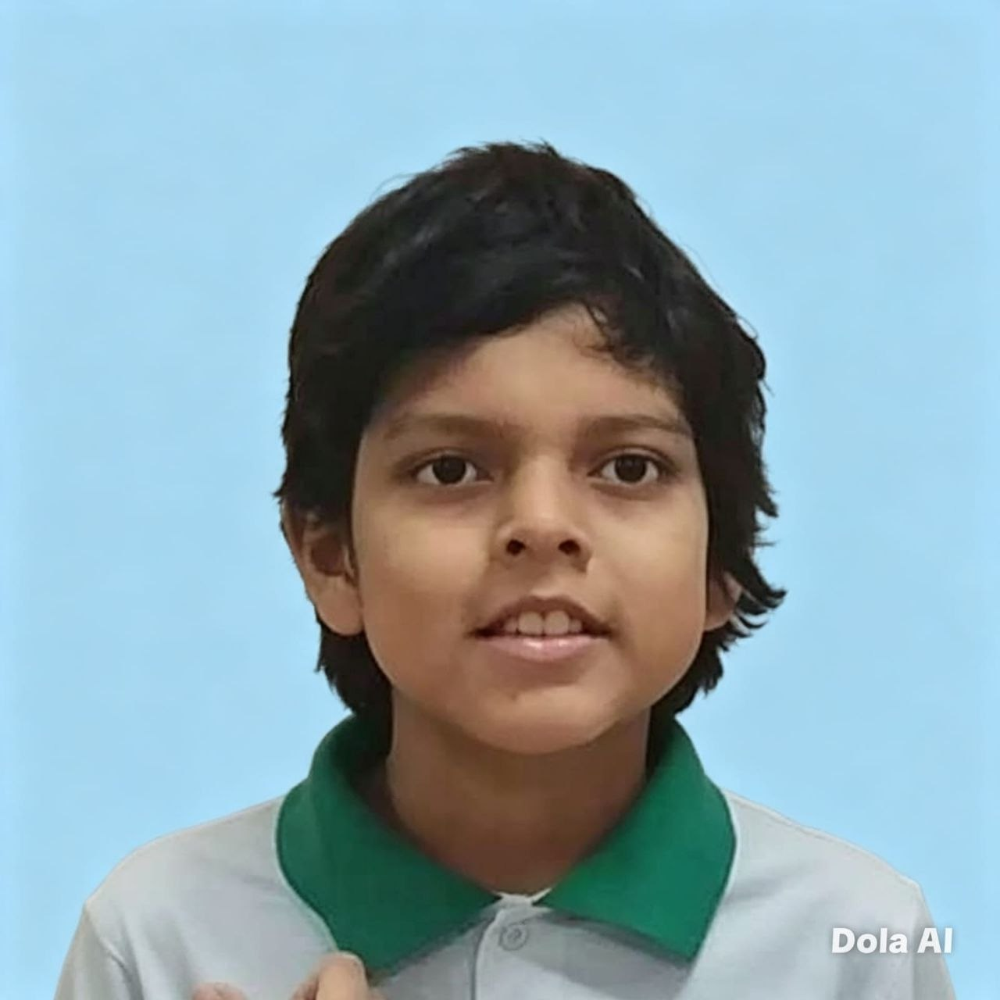
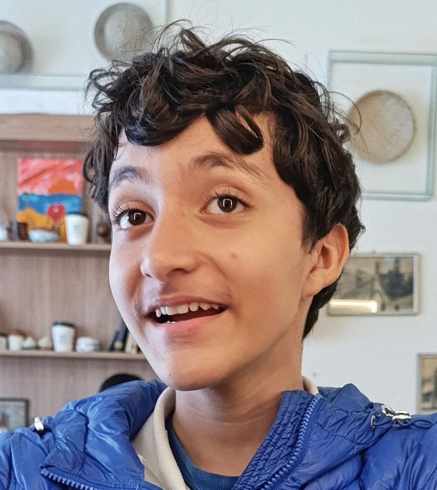

Arturito
Un carrito que sigue líneas negras, armado y programado por tres estudiantes de secundaria del colegio Jaime Alfonso Escalante Gutierrez A, en Santa Cruz de la Sierra.
La cinta negra se puede arrastrar — muévela para leer lo que hay debajo o dibuja figuras nuevas con ella.
El equipo
Tres cursos distintos y un solo carrito.


El robot
Arturito lee la línea con cinco sensores infrarrojos TCRT5000 en punta en la parte delantera. Un Arduino UNO decide hacia dónde girar y dos motores reductores amarillos lo empujan. Lo alimentan cuatro pilas AA y el interruptor de encendido se ve a simple vista, como pide el reglamento.
- Arduino UNO
- 5 sensores TCRT5000
- Driver dual de motores
- 2 motoreductores 1:48
- 4 pilas AA
- Menos de 25 × 30 cm

Cuando no quiso andar
La primera vez que lo encendimos con todo conectado, Arturito prendió todas sus luces y no movió una rueda. Estos fueron los fallos que aparecieron, en el orden en que salieron, y cómo se resolvió cada uno.
Las ruedas no giraban
Encendían las luces del Arduino, las de los cinco sensores y la del driver de motores, y los motores andaban bien conectados directo a las pilas. El faltante estaba en el driver: tiene una pata llamada EEP que funciona como un interruptor de reposo y venía sin conectar. Dormido, el chip recibe las órdenes pero nunca las ejecuta.
Para comprobarlo armamos un programa de prueba que enciende un solo cable de motor por vez, tres segundos cada uno, y avisa por el monitor serie qué rueda debería girar. Con un cable nuevo en EEP el mismo programa podía dormir y despertar al driver en plena marcha: el motor se frenaba al instante y volvía a girar al repetir la orden. El chip estaba sano; solo había que despertarlo. Solución: el cable D4→EEP quedó fijo y el código del robot lo pone en alto apenas arranca.
Cada rueda giraba para su lado
Ya despierto el driver, en la prueba de avance una rueda iba al frente y la otra para atrás: el motor izquierdo venía con los cables invertidos. Estos motores no traen marca de polaridad, así que se corrige en el conector intercambiando sus dos cables. Al repetir la prueba las dos giraron juntas.
Se movía sin parar sobre el blanco
Con las ruedas en el aire y una hoja blanca debajo, el robot no paraba de moverse. Sospechamos de los sensores leídos al revés, pero el monitor contaba otra historia: tres canales clavados en el valor máximo, como si vieran línea negra todo el tiempo. La causa era más simple: esos tres módulos estaban sin corriente porque la protoboard repartía mal la alimentación. Y un sensor apagado manda justo la lectura que el código entiende como «negro»: el robot se movía porque creía ver línea en todas partes. Un segundo programa de prueba, que solo lee los sensores sin tocar motores, mostró qué canales estaban muertos; alimentando un módulo directo desde la placa confirmamos que los sensores estaban sanos y el problema era la corriente.
¿Los sensores quedaron al revés?
Con los cinco encendidos llegó la prueba definitiva: pasar una cinta negra por debajo de cada sensor, de izquierda a derecha mirando el robot de frente, y anotar qué canal respondía. El orden salió S4, S3, S2, S1, S0: visto desde arriba, el S0 queda a la izquierda del robot y el S4 a la derecha, igual que en el código. No había inversión.
La moraleja: antes de tocar el código grande, probar cada parte por
separado con programas chicos. Los dos de diagnóstico
(prueba_drv8833 y prueba_sensores) quedaron
guardados en el repositorio. Y una nota práctica: los cables dupont se
aflojan solos — dos de los fallos de esa tarde fueron cables que se
habían salido al mover otros.
Los sensores van en punta de flecha
Lo normal en estos robots es poner los sensores en una fila recta. Nosotros los pusimos en punta de flecha: el del centro va adelantado y los otros cuatro van más atrás, en las orillas. Al entrar en una curva el de adelante la ve antes que los de atrás, y el robot sabe para qué lado dobla la línea antes de llegar a ella; es casi una lectura en profundidad, no en una sola línea. Con la fila recta todos los sensores se enteran a la vez y la corrección llega tarde.
También cuenta dónde cae la formación: cuanto más cerca estén los sensores del punto donde gira el robot, entre las dos ruedas, más fiel es lo que leen. Si quedan muy adelante, un giro chico los corre mucho y el robot corrige de más; pegados al eje, lo que ven se parece a lo que el robot gira de verdad.
La rueda loca es la bola de un desodorante
La tercera rueda de Arturito no es una rueda: es la bolita de un desodorante roll-on, encajada en su propia tapa de rosca montada al revés en la parte trasera del chasis. Desliza mucho mejor que un taco fijo y cuesta lo que cuesta un desodorante cuando ya está de tirar a la basura. La gracia está en la rosca: al enroscarla más o menos, la punta delantera del chasis sube o baja un poco, y así ajustamos la altura de los sensores sobre el suelo sin desarmar nada.
Eso trajo el problema que tenemos hoy: los sensores van por debajo del chasis y el aire que queda hasta el suelo es poco. En recta no se nota, pero a veces le cuesta tomar una curva, como si algo rozara. Falta ganar unos milímetros de altura, ya sea subiendo la bola en su rosca o montando los sensores de otra forma.
A dos días del concurso
Lo que falta ya no es que ande: es que ande rápido y no se equivoque. Queda mejorar la velocidad y resolver las intersecciones, que todavía le cuestan: en los cruces no siempre toma el camino correcto.
Un pulsador para largar
Hablando con el jurado quedó acordado que el bot largue con un interruptor visible: un pulsador propio, aparte del de encendido. El robot se enciende antes de la ronda y espera quieto ya apoyado en la pista; el botonazo es la largada, y como el cronómetro solo corre cuando el robot avanza, no hay apuro ni arranques en falso. Antes de pulsar da tiempo de confirmar que el LED del sensor central esté prendido: es la señal de que está viendo la línea.
El pulsador va entre el pin D8 y masa, a pelo: el pin usa el pull-up interno del Arduino y se entera del botonazo cuando lo bajan a masa. Miramos las otras dos opciones — llevarlo a 5 V o al positivo de la batería — y las dos obligaban a sumar resistencias; la de 5 V, además, dejaba el pin flotando mientras el botón está suelto, y un pin flotando puede leer largadas que nadie pidió. Lo que pesó fue una regla simple: cada elemento que se suma a un sistema es un punto más donde puede fallar. El botón y dos cables fue todo lo que hizo falta.
El concurso
Arturito corre en la categoría seguidor de línea amateur del 1.er Concurso Distrital de Robótica 2026, que organiza la Dirección Distrital de Educación Santa Cruz 1.
- Sábado 31 de octubre de 2026, de 9:00 a 13:00 (acreditación de 7:30 a 8:30).
- Colegio Internacional San Marcos, Santa Cruz de la Sierra.
- Pista de línea negra de 2 cm sobre fondo blanco, de 10 a 30 metros, con curvas de 90° o más abiertas, cruces y bifurcaciones.
- Dos minutos para completar el recorrido. Cada robot corre dos o tres rondas y cuenta el mejor tiempo.
- Si el robot se sale de la línea, tiene que reingresar a menos de 30 cm de donde se perdió. Los atajos no valen.
Premios
En la categoría seguidor de línea, donde corre Arturito, esto es lo que hay para cada puesto:
Trofeo de campeón, medalla y certificado, una beca completa de estudio en la U.E. España B, una beca para cursos de robótica de Tech Home y participación en Infomatrix y Robomatrix.
Trofeo de subcampeón, medalla, certificado y una sesión de terapia psicológica con la Lic. Oscar Urgazagasti.
Trofeo, medalla y certificado.
Aparte se sortea una impresora 3D Ender entre los tres primeros de cada categoría, y la organización sigue sumando premios: esta lista puede crecer.
Descargas
El esquema de conexión de las partes, con las fotos de la placa y el driver señalando cada pin, en un PDF para imprimir o tener a mano el día del concurso: arturito-esquema.pdf.
Por qué hay una versión 2
La primera versión decidía todo con una tabla de casos: según qué sensores veían la línea, el robot elegía una orden fija, y entre un caso y el siguiente el movimiento salía a tirones. Andaba, pero iba brusco, siempre a la misma velocidad y con el umbral de lectura fijo en el código. Reescribimos el control y esto fue lo que mejoró:
- La lectura dejó de ser blanco o negro por sensor y pasó a un número continuo: la posición de la línea bajo el robot. El giro es proporcional a esa posición, suavizado por un filtro que evita los tirones y un término derivativo que corta el zigzag.
- La velocidad se adapta sola: a fondo en las rectas, más baja en las curvas. En una carrera a contrarreloj es tiempo gratis.
- Encendido en la mano espera quieto, con los motores parados. Ya apoyado en la pista se verifica el LED del sensor central sobre la línea y se larga con un pulsador: así arranca la ronda justo cuando toca, sin volver a tocarlo después.
- Se calibra solo sobre la marcha: sale con los valores medidos en la mesa y, al apoyarlo, la primera lectura toma el blanco y el negro reales de la pista. Cada sensor termina de ajustarse la primera vez que pisa la línea.
- En una intersección avanza recto un tramo fijo sin leer, para no entrar a un ramal por una lectura a medio cruce.
- Si pierde la línea busca hacia el último lado donde la vio y, si no la encuentra, retrocede despacio hasta recuperarla.
- Trae un ajuste fino por motor (TRIM) para corregir la deriva en recta, porque ningún par de motores gira exactamente igual.
El código de las dos versiones no se publica hasta después del concurso; el día de la carrera llevamos ambas impresas aparte.